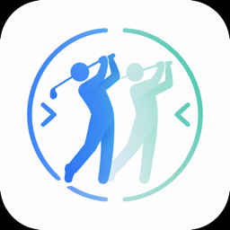
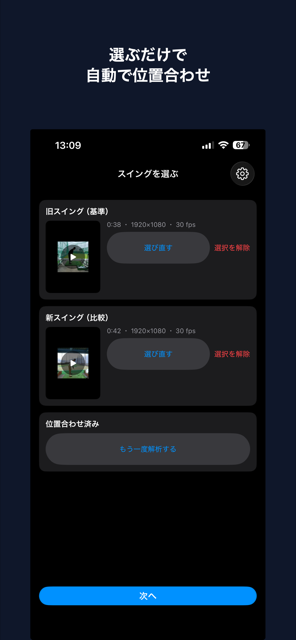
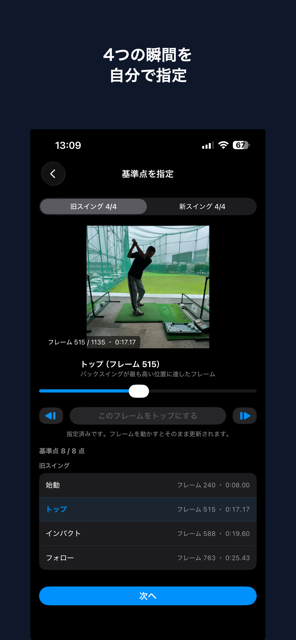
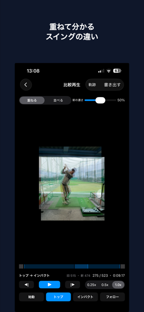
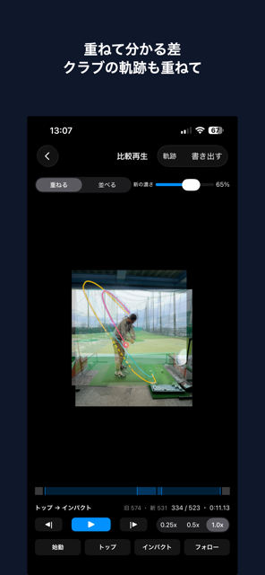
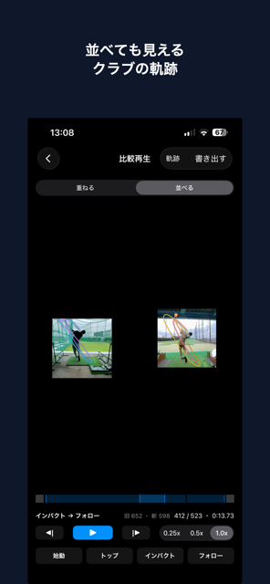

iPhone アプリ
SwingTwin（スイングツイン）は、過去のスイングと今のスイングを「重ねて」比べるアプリです。
撮った日が違っても、大きさ・位置・タイミングを自動で揃えるから、残った差だけがフォームの違いになります。
打席の場所も、カメラを置く距離も、その日によって違います。そのまま並べても、写り方が違うだけでフォームの差なのか分かりません。
大きさも位置もバラバラなまま並ぶので、見比べるのに毎回頭の中で補正が必要です。
身長が同じ大きさに、足元が同じ位置になるよう自動で合わせます。土台が揃うので、残った差だけがフォームの違いです。
写真アプリから「旧スイング」に過去の動画、「新スイング」に今の動画を選びます。2本そろうと、人物の大きさと位置を合わせる解析が自動で始まります。
アプリ内に撮影機能はありません。iPhone標準のカメラなどで撮った動画をそのまま使います。


スイングの速さは日によって変わります。始動・トップ・インパクト・フォローの4点を指定すると、その間の速さを区間ごとに合わせて、同じ瞬間どうしが並ぶようにします。
スライダーで場面を探し、1コマずつ調整できます。
重ねて透かして見れば、ズレがそのまま差として見えます。新しい方の濃さは自由に変えられます。
左右に並べれば、それぞれの形をしっかり確認できます。

気になる瞬間で止めて、じっくり見られます。
後方（飛球線の後ろ）から撮ったスロー動画向けです。未加入の方は、比較1組ごとに短い広告を1本見ると使えます（回数の制限はありません）。
後方から撮ったスロー動画では、クラブヘッドの軌跡を3色（トップとインパクトで色が変わる）に分けて描けます。書き出しにも軌跡を含められるので、練習の後に見返しても違いが残ります。
スロー撮影でない動画では軌跡の操作は使えず、その理由が画面に表示されます。後方から撮ったスロー動画でも、クラブヘッドを検出できない場合は軌跡を描けません。


重ねた映像をそのまま書き出して、写真アプリに保存できます。書き出しでは「並べる／重ねる」に加えて、軌跡を含めるかも選べます。アプリを開かなくても、練習の後に見返せます。未加入の方は、書き出すたびに短い広告を1本見てから書き出します。
無料でも、重ねる／並べる比較・自動の位置合わせ・4基準点の時間同期・スロー再生とコマ送りは回数の制限なくお使いいただけます。クラブヘッドの軌跡（比較1組ごと）と書き出し（1回ごと）は、短い広告を1本見ると、回数の制限なくお使いいただけます。
SwingTwin Pro に加入すると、すべての広告が出なくなります。軌跡も書き出しも、広告を見ずにお使いいただけます。
| 月額 | ¥150（1か月） |
|---|---|
| 年額 | ¥1,200（1年） |
動画をどこかへ送信することはありません。解析・比較・書き出しは、すべて端末の中だけで行われます。アカウント登録も不要です。
広告には Google AdMob を使用しています。未加入の場合、動画選択画面の下部にバナー広告が、基準点の指定画面から比較へ進むときに全画面広告が表示されることがあります。オフラインのときは広告を見られないため、軌跡と書き出しは使えません。